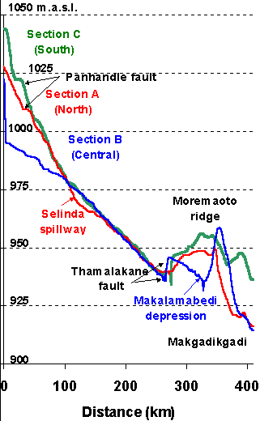

The three sections
show the topographic profile through the Panhandle and the central Delta
(section B), and two parallell profiles, one to the North (section A) and
one to the South (section C). The Panhandle depression and faults are seen
to the left in the graph. Note the offset in elevation between the North
and South sides of the Panhandle. This indicated that the Panhandle is
a true graben structure. The Thamalakane fault forms a distinct distal
part of the Okavango Delta. Also note the heght of the Moremaoto ridge
- a ridge of tectonic origin. The Boteti river than drains the Delta is
seen as a low point in the Makalamabedi depression. Selinda spillaway forms
an anomalous depression - which shows that it is of tectonic origin.
Click
for next page.